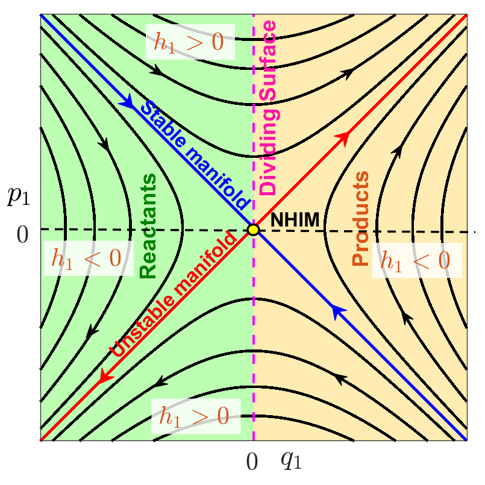
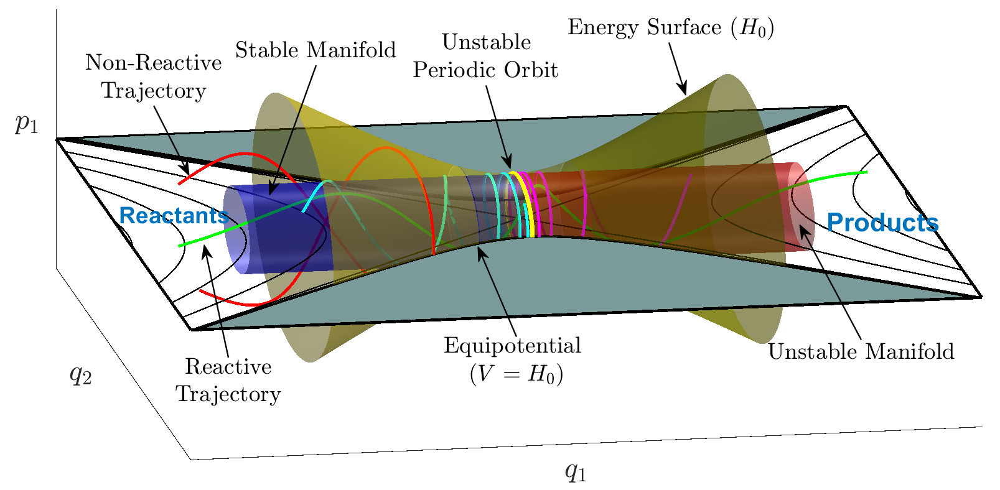
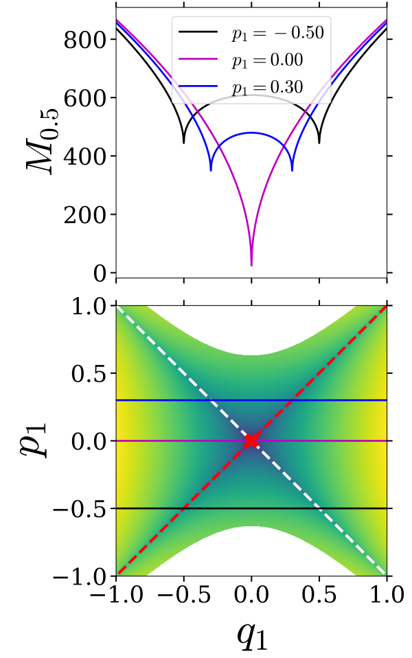

It is always useful to start with the basics to make the ideas concrete. So, the following one DoF system is the simplest model of a chemical reaction over a potential energy barrier between reactants and products. This is the archetypical one DoF Hamiltonian system modelling reaction dynamics associated with a saddle point. The only configuration space coordinate, $q$, is the reaction coordinate. The configuration space is one dimensional and the phase space is two dimensional.
The Hamiltonian for a (linear) one DoF saddle point is given by:
\begin{equation} H(q,p) = \frac{\lambda}{2} \left(p^2 - q^2 \right) = \underbrace{\frac{\lambda}{2} p^2}_{\stackrel{kinetic}{ energy}}- \underbrace{\frac{\lambda}{2} q^2}_{\stackrel{potential}{ energy}}, \quad \lambda >0. \label{ham1} \end{equation}In this simple system ''reaction'' corresponds to trajectories that change sign in $q$, which requires $H>0$ (as shown in Fig. \ref{fig:1 dof saddle} b)) and non-reacting trajectories have $H <0$.
The associated Hamilton's equations of motion are:
\begin{eqnarray} \dot{q} & = & \frac{\partial H}{\partial p}= \lambda p, \nonumber \\ \dot{p} & = & -\frac{\partial H}{\partial q}= \lambda q. \label{hameq1} \end{eqnarray}In Fig. \ref{fig:1 dof saddle} a) we show the potential energy, $V(q) =-\frac{\lambda}{2} q^2$. In Fig. \ref{fig:1 dof saddle} b) we show the contour lines of the Hamiltonian for some values of the total energy, typically referred to as the phase portrait corresponding to \eqref{ham1}.
 \caption{a) The potential energy, $V(q) =-\frac{\lambda}{2} q^2$, for a one DoF saddle. b)The phase space for the one DoF saddle.}
\caption{a) The potential energy, $V(q) =-\frac{\lambda}{2} q^2$, for a one DoF saddle. b)The phase space for the one DoF saddle.}
Now we discuss the phase space structures -- NHIM, its stable and unstable manifolds -- and their role in constructing the DS. All of these notions are trivial in this simple setting, but they will serve to focus the ideas when we consider more DoF.
For this case the NHIM is the saddle point at the origin (a single point is a trivial example of a manifold). It only exists on the $H=0$ energy surface (this is very different when we go to two, and more, DoF) and its stable and unstable manifolds are the diagonal lines (also on the $H=0$ energy surface--the stable and unstable manifolds of a NHIM have the same energy as the NHIM).
The non-isoenergetic DS can be taken as the line $q=0$. Clearly, it has the ''no-recrossing'' properties and all reacting trajectories must cross this line. The DS at a fixed (positive) energy is given by
\begin{equation} \frac{\lambda}{2} p^2 = H = \mbox{constant}, \end{equation}or
\begin{equation} p =\pm \sqrt{\frac{2}{\lambda} H}. \end{equation}So for a fixed energy H > 0 the DS consists of two distinct points: $p =+ \sqrt{\frac{2}{\lambda} H}$ (the dividing surface for forward reactions) and $p =- \sqrt{\frac{2}{\lambda} H}$ (the dividing surface for backward reactions). These points are just the intersections of the reacting trajectories with q=0.
The following two DoF system is the one DoF system (reactant) coupled to a harmonic oscillator (bath). The configuration space coordinates are $q_1$ and $q_2$. The configuration space is two dimensional and the phase space is four dimensional.
The system is described by a quadratic 2 DoF Hamiltonian:
\begin{equation} H(q_{1},q_{2},p_{1},p_{2}) = \underbrace{\frac{\lambda}{2} \left(p_1^2 - q_1^2 \right)}_{H_1} + \underbrace{\frac{\omega}{2} \left(p_2^2 + q_2^2 \right)}_{H_2}, \quad \lambda, \, \omega >0, \label{ham2} \end{equation}where $H_{1}$ represents the energy in the reactive DoF and $H_{2}$ corresponds to the energy associated with the bath DoF. The corresponding Hamilton's equations are given by:
\begin{eqnarray} \dot{q}_1 & = & \frac{\partial H}{\partial p_1}= \lambda p_1, \nonumber \\ \dot{p}_1 & = & -\frac{\partial H}{\partial q_1}= \lambda q_1, \nonumber \\ \dot{q}_2 & = & \frac{\partial H}{\partial p_2}= \omega p_2, \nonumber \\ \dot{p}_2 & = & -\frac{\partial H}{\partial q_2}= -\omega q_2, \label{hameq2} \end{eqnarray}These equations have an equilibrium point of saddle-center equilibrium type (index one saddle) at the origin. In Fig. \ref{fig:2 dof saddle} a) we show contours of the potential energy and in Fig. \ref{fig:2 dof saddle} b) we show the phase portrait corresponding to \eqref{ham2}. Since the Hamiltonians $H_1$ and $H_2$ are uncoupled we can sketch the phase portraits for each separately, and discuss the distribution of total energy between each DoF in a simple manner.
 \caption{a) Contours of the potential energy, $V(q_1, q_2) =-\frac{\lambda}{2} q_1^2 + \frac{\omega}{2} q_2^2$, denoting the sign of $V(q_1, q_2) = \mbox{constant}$. b) The phase space for the two DoF saddle defined by \eqref{hameq2}.}
\caption{a) Contours of the potential energy, $V(q_1, q_2) =-\frac{\lambda}{2} q_1^2 + \frac{\omega}{2} q_2^2$, denoting the sign of $V(q_1, q_2) = \mbox{constant}$. b) The phase space for the two DoF saddle defined by \eqref{hameq2}.}
Notice that this system can be easily solved. Given the initial condition
$$ \mathbf{x}_0 = \mathbf{x}(t_0) = (q_1^{0},q_2^{0},p_1^{0},p_2^{0}) \quad,\quad t_0 = 0 $$the general solution to Eq. \eqref{hameq2} has the form:
\begin{equation} \begin{split} q_1(t) = q^0_1 \cosh(\lambda t) + p^0_1 \sinh(\lambda t) \quad &, \quad p_1(t) = q^0_1 \lambda \sinh(\lambda t) + p^0_1 \lambda \cosh(\lambda t) \\[.3cm] q_2(t) = q^0_2 \cos(\omega t) + p_2^0 \sin(\omega t) \quad &, \quad p_2(t) = - q^0_2 \, \omega \sin(\omega t) + p^0_2 \, \omega \cos(\omega t) \end{split} \label{gen_sol_linham} \end{equation}If the energy of the bath DoF is:
$$ H_2 = \dfrac{\omega}{2}((p_2^0)^2 + (p_2^0)^2) $$then the trajectory in the $q_2$-$p_2$ plane satisfies the equation:
$$ \dfrac{2H_2}{\omega} = (q_2^0)^2 + (p_2^0)^2 $$giving rise to a periodic orbit (a circle) in the $q_2$-$p_2$ plane with radius $\sqrt{2H_2/\omega}$.
Note that trajectories corresponding to $H_1$ can become unbounded and trajectories corresponding to $H_2$ are bounded. Hence in this system reaction occurs when the $q_1$ coordinate of a trajectory changes sign. Therefore, a ''natural'' dividing surface would be $q_1 =0$. This is a three dimensional surface in the four dimensional phase space. We want to examine it's structure more closely and, in particular, its' intersection with a fixed energy surface. We will also utilize terminology from chemistry by referring to $H_1$ as the ''reactive mode'' and $H_2$ is the ''bath mode''.
First, note that for reaction to occur we must have $H_1 >0$, since the $q_1$ component of reacting trajectories changes sign. Also, it is clear from the form of $H_2$ that $H_2 \ge 0$. Therefore, for reaction we must have $H = H_1 + H_2 >0$. The energy surface is given by:
\begin{equation} \mathcal{S}(H) = \left\lbrace \left(q_1,q_2,p_1,p_2\right) \;\Big|\; H = H_1 + H_2 = \dfrac{\lambda}{2}\left(p_1^2 - q_1^2\right) + \dfrac{\omega}{2} \left(p_2^2 + q_2^2 \right) \right\rbrace \label{eq:en_hypers} \end{equation}The intersection of $q_1=0$ with this energy surface is given by:
\begin{equation} \mathcal{D}(H) = \mathcal{S}(H) \cap \lbrace q_1 = 0 \rbrace = \left\lbrace \left(q_1,q_2,p_1,p_2\right) \;\big|\; H = \dfrac{\lambda}{2} p_1^2 +\dfrac{\omega}{2} \left(p_2^2 + q_2^2 \right) \; , \; q_1 = 0 \right\rbrace \label{2DoDS} \end{equation}This is the isoenergetic DS. It has the form of a 2-sphere in the four dimensional $(q_1, p_1, q_2, p_2)$ space. It has two ''halves'' corresponding to the forward and backward reactions, respectively:
\begin{equation} \mathcal{D}_{f}(H) = \left\lbrace \left(q_1,q_2,p_1,p_2\right) \;\Big|\; p_1 = \sqrt{\frac{2}{\lambda}}\sqrt{H + \frac{\lambda}{2}q_1^2 - \frac{\omega}{2}(q_2^2+p_2^2)} \;\; , \; q_1 = 0 \right\rbrace \label{eq:forward_DS} \end{equation}and backward reaction:
\begin{equation} \mathcal{D}_{b}(H) = \left\lbrace \left(q_1,q_2,p_1,p_2\right) \;\Big|\; p_1 = - \sqrt{\frac{2}{\lambda}}\sqrt{H + \frac{\lambda}{2}q_1^2 - \frac{\omega}{2}(q_2^2+p_2^2)} \;\; , \; q_1 = 0 \right\rbrace \label{eq:backward_DS} \end{equation}Observe that the DS has the no-recrossing property, meaning that the Hamiltonian vector field is never zero or tangent to the DS. Moreover, since Hamilton's equations impose that $\dot{q}_1 = \lambda p_{1}$, by construction any point starting on the forward DS will leave the DS in the same direction, and the same applies for the backward DS. The two hemispheres of the DS meet at the NHIM, which is the equator of the DS and is described by the set:
$$ \mathcal{N}(H) = \mathcal{S}(H) \cap \lbrace q_1 = p_1 = 0 \rbrace = \left\lbrace \left(q_1,q_2,p_1,p_2\right) \;\Big|\; H = \dfrac{\omega}{2} \left(p_2^2 + q_2^2 \right) \; , \; q_1 = p_1 = 0 \right\rbrace $$which is a circle $(S^{1})$. Furthermore, it is an invariant manifold because the phase space trajectory of an initial point on the NHIM, which has $q_1 = p_1 = 0$, due to Hamilton's equations $\dot{q}_1 = \lambda p_{1}$ and $\dot{p}_1 = \lambda q_{1}$ that imply $\dot{q}_1 = \dot{p}_1 = 0$, remains on the NHIM forever. The NHIM is normally hyperbolic since it has saddle-type stability as the $q_1$-$p_1$ coordinates transverse to it have exponential growth and decay dynamics. This can be explicitly seen from Eq. \eqref{gen_sol_linham}. This behavior allows for the construction of the stable and unstable invariant manifolds of the NHIM:
\begin{equation} \mathcal{W}^{u}_{\mathcal{N}}(H) = \left\lbrace (q_1,q_2,p_1,p_2) \;\Big|\; H = \dfrac{\omega}{2}( p_2^2 + q_2^2) \; , \; p_1 =q_1 \right\rbrace \label{u_manifolds} \end{equation}\begin{equation} \mathcal{W}^{u}_{\mathcal{N}}(H) = \left\lbrace (q_1,q_2,p_1,p_2) \;\Big|\; H = \dfrac{\omega}{2}( p_2^2 + q_2^2) \; , \; p_1 = -q_1 \right\rbrace \label{s_manifolds} \end{equation}which are known in the dynamical systems literature as spherical cylinders because they have the topological structure $\mathbb{R} \times S^{1}$, that is, the cartesian product of a line ($p_1 = q_1$ or $p_1 = - q_1$) and a one-dimensional sphere. It is straightforward to show that they are invariant and that any phase space point starting on the unstable (stable) manifold will approach the NHIM as $t \to -\infty$ ($t \to +\infty$). Moreover, if an initial condition is inside the spherical cylinder correspinitialonding to the stable (unstable) manifold, then it will cross the phase space bottleneck that opens in the neighborhood of the index-1 saddle at the origin in forward (backward) time. Consequently, the trajectories of these initial conditions can be classified as reactive trajectories that go from the reactants to the products region. For this reason, the stable and unstable manifolds of the NHIM are known in the Chemistry literature as reactive cylinders, giving rise to reactive islands when they intersect a Poincare section of the phase space. On the other hand, if an initial condition is outside the spherical cylinders, the trajectory will not cross from reactants to products, and that trajectory would be classified as non-reactive. For a visual illustration of all these concept see Figs. \ref{fig:saddle_space} , \ref{fig:center_space} and \ref{fig:bottleneck}.
 \label{fig:saddle_space} \caption{Phase portrait of the saddle space $q_1$-$p_1$ with all the relevant phase space structures to describe chemical reaction dynamics in the quadratic normal form Hamiltonian with two DoF.}
 \label{fig:center_space}
\caption{Phase portrait of the center space $q_2$-$p_2$ foliated with periodic orbits for the quadratic normal form Hamiltonian with two DoF.}
\label{fig:center_space}
\caption{Phase portrait of the center space $q_2$-$p_2$ foliated with periodic orbits for the quadratic normal form Hamiltonian with two DoF.}
 \label{fig:ps_bottleneck} \caption{Visualization of the relevant phase space structures that characterize chemical reaction dynamics for the quadratic normal form Hamiltonian with two DoF.}
The following three DoF system is the one DoF system (reactant) coupled to two harmonic oscillators (bath modes). The configuration space coordinates are $q_1$, $q_2$ and $q_3$. The configuration space is three dimensional and the phase space is six dimensional.
We consider a quadratic 3 DoF Hamiltonian:
\begin{equation} H = \underbrace{\frac{\lambda}{2} \left(p_1^2 - q_1^2 \right)}_{H_1} + \underbrace{\frac{\omega_2}{2} \left(p_2^2 - q_2^2 \right)}_{H_2} + \underbrace{\frac{\omega_3}{2} \left(p_3^2 - q_3^2 \right)}_{H_3}, \quad \lambda, \, \omega_2, \, \omega_3 >0 \label{ham3} \end{equation}with the corresponding Hamilton's equations given by:
\begin{eqnarray} \dot{q}_1 & = & \frac{\partial H}{\partial p_1}= \lambda p_1, \nonumber \\ \dot{p}_1 & = & -\frac{\partial H}{\partial q_1}= \lambda q_1, \nonumber \\ \dot{q}_2 & = & \frac{\partial H}{\partial p_2}= \omega_2 p_2, \nonumber \\ \dot{p}_2 & = & -\frac{\partial H}{\partial q_2}= -\omega_2 q_2, \nonumber \\ \dot{q}_3 & = & \frac{\partial H}{\partial p_3}= \omega_3 p_3, \nonumber \\ \dot{p}_3 & = & -\frac{\partial H}{\partial q_3}= -\omega_3 q_3, \label{hameq3} \end{eqnarray}These equations have an equilibrium point of saddle-center-center equilibrium type (index one saddle) at the origin. Since the Hamiltonians $H_1$, $H_2$ and $H_3$ are uncoupled we can analyze the phase portraits for each separately. As in the previous examples, $H_1$ corresponds to the ''reactive mode'' (trajectories can become unbounded) and $H_2$ and $H_3$ are ''bath modes'' (trajectories are bounded).
In this system reaction occurs when the $q_1$ coordinate of a trajectory changes sign. Hence, as in the 2 DoF example, a ''natural'' dividing surface would be $q_1 =0$. This is a five dimensional surface in the six dimensional phase space. We want to examine its' structure more closely and, in particular, its intersection with a fixed 5 dimensional energy surface.
First, note that for reaction to occur we must have $H_1 >0$. Also, it is clear that $H_2, H_3 \ge 0$. Therefore, for reaction we must have $H = H_1 + H_2 + H_3 >0$. The energy surface is given by:
\begin{equation} \frac{\lambda}{2} \left(p_1^2 - q_1^2 \right) + \frac{\omega_2}{2} \left(p_2^2 + q_2^2 \right) + \frac{\omega_3}{2} \left(p_3^2 + q_3^2 \right)= H_1 + H_2+ H_3 = H > 0, \quad H_1 > 0, \, H_2, H_3 \ge 0. \label{2DoFES} \end{equation}The intersection of $q_1=0$ with this energy surface is given by:
\begin{equation} \frac{\lambda}{2} \, p_1^2 + \frac{\omega_2}{2} \left(p_2^2 + q_2^2 \right) + \frac{\omega_3}{2} \left(p_3^2 + q_3^2 \right)= H_1 + H_2 + H_3= H > 0, \quad H_1 > 0, \, H_2, \, H_3 \ge 0. \label{2DoDS} \end{equation}This is the isoenergetic DS. It has the form of a 3-sphere in the four dimensional $(q_1, p_1, q_2, p_2, q_3, p_3)$ space. It has two ''halves'' corresponding to the forward and backward reactions, respectively:
\begin{equation} p_1 = + \sqrt{\frac{2}{\lambda}} \sqrt{H_1 + H_2 + H_3 - \frac{\omega}{2} \left(p_2^2 + q_2^2 \right) - \frac{\omega}{2} \left(p_3^2 + q_3^2 \right) }, \quad \mbox{forward DS}, \end{equation}\begin{equation} p_1 = - \sqrt{\frac{2}{\lambda}} \sqrt{H_1 + H_2 + H_3 - \frac{\omega}{2} \left(p_2^2 + q_2^2 \right) - \frac{\omega}{2} \left(p_3^2 + q_3^2 \right) }, \quad \mbox{backward DS}, \end{equation}The forward and backward DS ''meet'' at $p_1 =0$:
\begin{equation} \frac{\omega_2}{2} \left(p_2^2 + q_2^2 \right) + \frac{\omega_3}{2} \left(p_3^2 + q_3^2 \right)= H_2 + H_3 \ge 0, \mbox{NHIM}, \label{NHIM3D} \end{equation}which is a normally hyperbolic invariant 3 sphere. It is {\em invariant} because on this set $q_1 = p_1 =0$ and, from \eqref{hameq3}, if $q_1 = p_1 =0$ the $\dot{q}_1 = \dot{p}_1 =0$. Hence, $q_1$ and $p_1$ always remain zero, and therefore trajectories with these initial conditions always remain on \eqref{NHIM3D}. In other words, it is invariant. It is normally hyperbolic for the same reasons as for our 2 DoF example. The directions normal to \eqref{NHIM3D}, i.e. $q_1-p_1$, are linearized saddle like dynamics.
We consider isoenergetic two-dimensional surfaces parametrized by two coordinates and compute the Lagrangian descriptor in a square domain of size 2 units around the origin. We discretize the coordinates of the two dimensional surface and pick constant values for three of the four remaining coordinates, and use the total energy equation to solve for the sixth coordinate. Due to the form of the Hamiltonian~\eqref{ham3}, obtaining the coordinate from the constant energy condition is simply solving a quadratic equation.
- Isoenergetic two-dimensional surface parametrized by $(q_1, p_1)$ On the constant energy surface, $H(q_1, p_1, q_2, p_2, q_3, p_3) = h$, we compute Lagrangian descriptor on a two-dimensional surface parametrized by $(q_1, p_1)$ coordinates by defining
where
\begin{align} p_3(q_1, p_1, q_2 = 0, p_2 = 0, q_3 = 0; h) = \sqrt{\frac{2}{\omega_3}\left( h - \frac{\lambda}{2}\left( p_1^2 - q_1^2 \right) \right)} \end{align}The intersection of the two-dimensional surface $U_{q_1p_1}^+$ with the NHIM~\eqref{eqn:sep_quad_ham3dof_nhim} becomes
\begin{align} \mathcal{M}(h) \cap U_{q_1p_1}^+ = \left\{ (q_1, p_1, q_2, p_2, q_3, p_3) \; \vert \; q_1 = 0, p_1 = 0, q_2 = 0, p_2 = 0, q_3 = 0, \dot{q}_3 > 0 : p_3(q_1, p_1, q_2, p_2, q_3; h) > 0 \right\}. \end{align}Thus, the NHIM is located at the origin $(0,0)$ and marked by a red cross in the LD plot (Fig.~\ref{fig:LD_SQH_3dof_q1p1}).
Next, the intersection of the two-dimensional surface with the unstable~\eqref{eqn:quad_ham3dof_umani} and stable manifolds~\eqref{eqn:quad_ham3dof_smani} is given by
\begin{align} \mathcal{W}^u(\mathcal{M}(h)) \cap U_{q_1p_1}^+ = \left\{ (q_1, p_1, q_2, p_2, q_3, p_3) \; \vert \; q_1 = p_1, q_2 = 0, p_2 = 0, q_3 = 0, \dot{q_3} > 0 : \right. p_3(q_1, p_1, q_2, p_2, q_3; h) > 0 \right\}, \\ \mathcal{W}^s(\mathcal{M}(h)) \cap U_{q_1p_1}^+ = \left\{ (q_1, p_1, q_2, p_2, q_3, p_3) \; \vert \; q_1 = -p_1, q_2 = 0, p_2 = 0, q_3 = 0,\dot{q_3} > 0 : \right. p_3(q_1, p_1, q_2, p_2, q_3;h) > 0 \right\}, \end{align}which are one-dimensional for a fixed energy, and represent lines passing through the origin shown as dashed red (unstable) and white (stable) lines, respectively, in Fig.~\ref{fig:LD_SQH_3dof_q1p1}. The only points of local minima in the LD plot (Fig.~\ref{fig:LD_SQH_3dof_q1p1}) also lie along the lines passing through the origin and correspond to the manifolds of the NHIM.
- Isoenergetic two-dimensional surface parametrized by $(q_2, p_2)$ On the constant energy surface, $H(q_1, p_1, q_2, p_2, q_3, p_3) = h$, we compute Lagrangian descriptor on a two-dimensional surface parametrized by $(q_2, p_2)$ coordinates by defining
where
\begin{align} p_1(q_1 = 0, q_2, p_2, q_3 = 0, p_3 = 0; h) = \sqrt{\frac{2}{\lambda}\left( h - \frac{\omega_2}{2}\left( p_2^2 + q_2^2 \right) \right)} \end{align}The intersection of the two-dimensional surface $U_{q_2p_2}^+$ with the NHIM~\eqref{eqn:sep_quad_ham3dof_nhim} becomes
\begin{align} \mathcal{M}(h) \cap U_{q_2p_2}^+ = \left\{ (q_1, p_1, q_2, p_2, q_3, p_3) \; \vert \; q_1 = 0, p_1 = 0, p_3 = 0, q_3 = 0, \dot{q}_3 > 0 : \frac{\omega_2}{2}\left( p_2^2 + q_2^2 \right) = h \right\}. \end{align}Thus, the NHIM is the circle of radius $\sqrt{2h/\omega_2}$ and marked by a dashed line in the LD plot (Fig.~\ref{fig:LD_SQH_3dof_q2p2}).
Next, the intersection of the two-dimensional surface with the unstable~\eqref{eqn:quad_ham3dof_umani} and stable manifolds~\eqref{eqn:quad_ham3dof_smani} is given by
\begin{align} \mathcal{W}^u(\mathcal{M}(h)) \cap U_{q_2p_2}^+ = \left\{ (q_1, p_1, q_2, p_2, q_3, p_3) \; \vert \; q_1 = p_1, q_1 = 0, q_3 = 0, p_3 = 0, \dot{q_3} > 0 : \frac{\omega_2}{2}\left( p_2^2 + q_2^2 \right) = h \right\}, \\ \mathcal{W}^s(\mathcal{M}(h)) \cap U_{q_2p_2}^+ = \left\{ (q_1, p_1, q_2, p_2, q_3, p_3) \; \vert \; q_1 = -p_1, q_1 = 0, q_3 = 0, p_3 = 0,\dot{q_3} > 0 : \frac{\omega_2}{2}\left( p_2^2 + q_2^2 \right) = h \right\}, \end{align}which are one-dimensional for a fixed energy, and marked by dashed red (unstable) and white (stable) lines, respectively, in Fig.~\ref{fig:LD_SQH_3dof_q2p2}. The only points of local minima in the LD plot (Fig.~\ref{fig:LD_SQH_3dof_q2p2}) also lie along the lines passing through the origin and correspond to the manifolds of the NHIM.
\  \
\ 
\caption{Lagrangian descriptor plot of the separable quadratic Hamiltonian vector field~\eqref{eqn:hameq3} on the isoenergetic two-dimensional surface \protect\subref{fig:LD_SQH_3dofq1p1} $U{q_1p_1}^{+}$, \protect\subref{fig:LD_SQH_3dof_q2p2} $U_{q_2p_2}^{+}$, \protect\subref{fig:LD_SQH_3dof_q3p3} $U_{q_3p_3}^{+}$. The parameters used are $\lambda = \omega_2 = \omega_3 = 1.0$, $h = 0.2$, and $\tau = 10$.} \end{figure}
- Isoenergetic two-dimensional surface parametrized by $(q_3, p_3)$ ~On the constant energy surface, $H(q_1, p_1, q_2, p_2, q_3, p_3) = h$, we compute Lagrangian descriptor on a two-dimensional surface parametrized by $(q_3, p_3)$ coordinates by defining
where
\begin{align} q_1(p_1 = 0, q_2 = 0, p_2 = 0, q_3, p_3; h) = \sqrt{\frac{2}{\lambda}\left( \frac{\omega_3}{2}\left( p_3^2 + q_3^2 \right) - h \right)} \end{align}%
The intersection of the two-dimensional surface $U_{q_3p_3}^+$ with the NHIM~\eqref{eqn:sep_quad_ham3dof_nhim} becomes
\begin{align} \mathcal{M}(h) \cap U_{q_3p_3}^+ = \left\{ (q_1, p_1, q_2, p_2, q_3, p_3) \; \vert \; q_1 = 0, p_1 = 0, p_2 = 0, q_2 = 0, \dot{p_1} > 0 : \frac{\omega_3}{2}\left( p_3^2 + q_3^2 \right) = h \right\}. \end{align}Thus, the NHIM is the circle of radius $\sqrt{2h/\omega_3}$ and marked by a dashed line in the LD plot (Fig.~\ref{fig:LD_SQH_3dof_q3p3}).
Next, the intersection of the two-dimensional surface with the unstable~\eqref{eqn:quad_ham3dof_umani} and stable manifolds~\eqref{eqn:quad_ham3dof_smani} is given by
\begin{align} \mathcal{W}^u(\mathcal{M}(h)) \cap U_{q_3p_3}^+ = \left\{ (q_1, p_1, q_2, p_2, q_3, p_3) \; \vert \; q_1 = p_1, p_1 = 0, q_2 = 0, p_2 = 0, \dot{p_1} > 0 : \frac{\omega_3}{2}\left( p_3^2 + q_3^2 \right) = h \right\}, \\ \mathcal{W}^s(\mathcal{M}(h)) \cap U_{q_3p_3}^+ = \left\{ (q_1, p_1, q_2, p_2, q_3, p_3) \; \vert \; q_1 = -p_1, p_1 = 0, q_2 = 0, p_2 = 0,\dot{p_1} > 0 : \frac{\omega_3}{2}\left( p_3^2 + q_3^2 \right) = h \right\}, \end{align}which are one-dimensional for a fixed energy and represent circles of radius $\sqrt{2h/\omega_3}$, and marked by dashed red (unstable) and white (stable) lines, respectively, in Fig.~\ref{fig:LD_SQH_3dof_q3p3}. The only points of minima and singularity in the LD plot (Fig.~\ref{fig:LD_SQH_3dof_q3p3}) is along the circle and thus identify the manifolds of the NHIM.
The influence of index two saddle points on reaction dynamics has been studied in (missing reference). The construction of a dividing surface for general index k saddles was given in (missing reference). However, in this section we describe a ''global dividing surface'' that is associated with an index two saddle point and two index one saddle points. Such a structure was constructed in analyzing the isomerization dynamics of a buckled nanobeam in (missing reference). Intriguingly, a similar geometrical structure arises in the study of the ''roaming'' phenomenon in (missing reference). Consequently, this type of geometrical structure could be more widespread in reaction dynamics so we believe it may be useful to give an analytically tractable example of such a situation.
Unlike our linear examples above, for the system to have multiple saddle points it must be nonlinear. We will consider two identical uncoupled two well potential systems, as shown in Fig. \ref{fig:global DS 1}.
 \caption{a) Graphs of the potential energy for the two uncoupled two well systems. b) Phase portraits for the two uncoupled two well systems.}
\caption{a) Graphs of the potential energy for the two uncoupled two well systems. b) Phase portraits for the two uncoupled two well systems.}
The Hamiltonian for this system is given by:
\begin{equation} H =\underbrace{\frac{p_1^2}{2} - \frac{q_1^2}{2} + \frac{q_1^4}{4}}_{H_1} + \underbrace{\frac{p_2^2}{2} - \frac{q_2^2}{2} + \frac{q_2^4}{4}}_{H_2}, \label{hamGDS} \end{equation}with the associated Hamiltonian vector field:
\begin{eqnarray} \dot{q}_1 & = & \frac{\partial H}{\partial p_1}= p_1, \nonumber \\ \dot{p}_1 & = & -\frac{\partial H}{\partial q_1}= q_1 - q_1^3, \nonumber \\ \dot{q}_2 & = & \frac{\partial H}{\partial p_2}= p_2, \nonumber \\ \dot{p}_2 & = & -\frac{\partial H}{\partial q_2}= q_2- q_2^3. \label{hameqGDS} \end{eqnarray}The potential energy is given by:
\begin{equation} V(q_1, q_2) = - \frac{q_1^2}{2} + \frac{q_1^4}{4}- \frac{q_2^2}{2} + \frac{q_2^4}{4}. \label{pot} \end{equation}The potential energy has nine critical points, which we list below, along with their stability type and total energy:
\begin{equation} \begin{array}{cll} (0,0), & \mbox{index two saddle}, & \mbox{total energy} \, \, 0,\\ (0,1), (0, -1), (1, 0), (-1, 0), & \mbox{index one saddles}, & \mbox{total energy} \, \,-{1}/{4} ,\\ (1, 1), (1, -1), (-1, 1), (-1, -1), & \mbox{minima}, & \mbox{total energy} \, \, -{1}/{2}, \end{array} \end{equation}We illustrate the critical points of \eqref{pot} in Fig. \ref{fig:global DS 2}.
 \caption{Critical points of \eqref{pot}. ++ denotes the index two saddle, + denotes index one saddles, and the black circles denote the minima.}
\caption{Critical points of \eqref{pot}. ++ denotes the index two saddle, + denotes index one saddles, and the black circles denote the minima.}
In order to consider a surface to be a dividing surface we need to understand what the surface is dividing. In the language of chemical reactions, index one saddles give rise to dividing surfaces that divide reactants and products. The examples above were designed only to illustrate the geometry associated with the passage of trajectories through a dividing surface. In particular, in the examples ''reactants'' corresponded to a region have a particular sign of the $q_1$ coordinate and ''products'' corresponded to a region corresponding to the opposite sign of the $q_1$ coordinate. and it was arbitrary which region was considered reactants and which products.